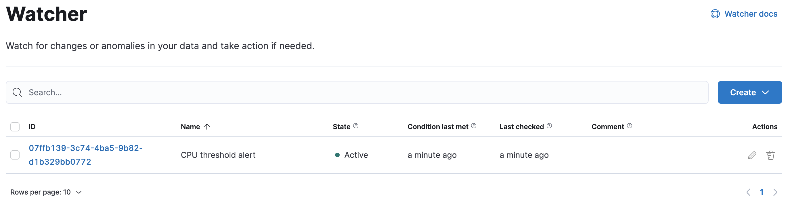
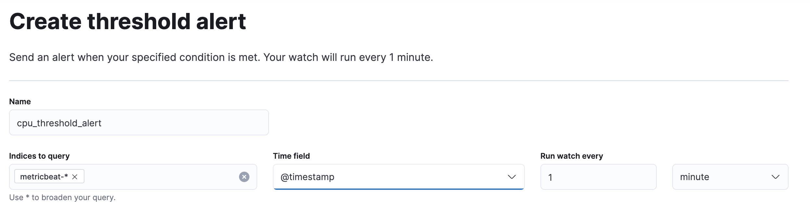
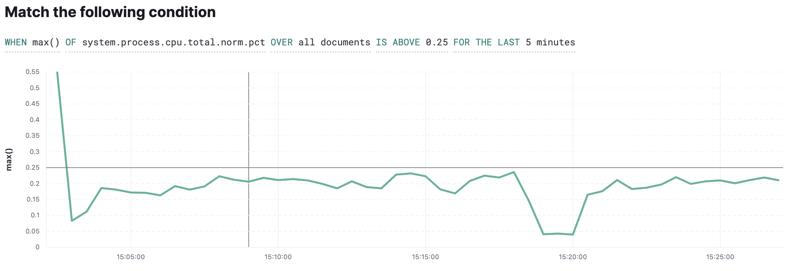
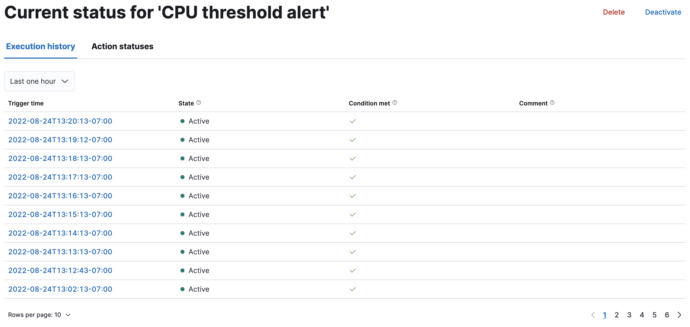
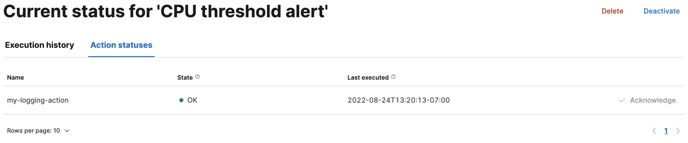
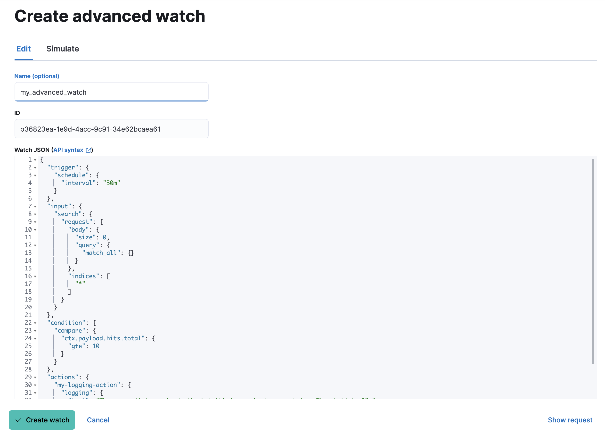
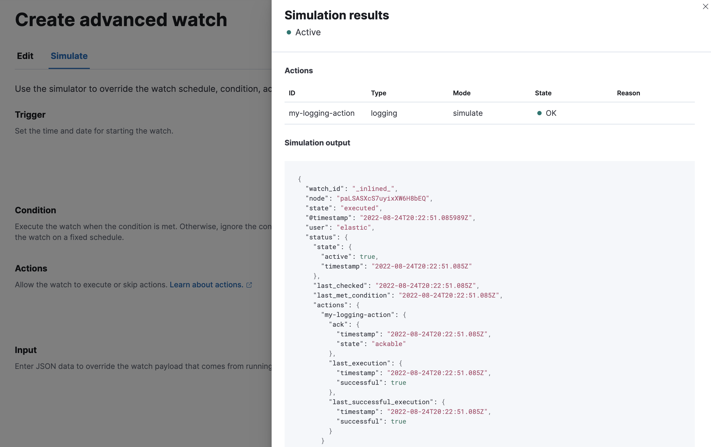

Watcher
editWatcher is an Elasticsearch feature that you can use to create actions based on conditions, which are periodically evaluated using queries on your data. Watches are helpful for analyzing mission-critical and business-critical streaming data. For example, you might watch application logs for performance outages or audit access logs for security threats.
To get started, open the main menu, then click Stack Management > Watcher. With this UI, you can:

Alerting on cluster and index events is a good source for detailed information on how watches work. If you are using the UI to create a threshold watch, take a look at the different watcher actions. If you are creating an advanced watch, you should be familiar with the parts of a watch—input, schedule, condition, and actions.
There are limitations in Watcher that affect Kibana. For information, refer to Alerting.
Watcher security
editTo use Watcher in Kibana, you must have the built-in kibana_admin role
and either of these Watcher roles:
-
watcher_admin. You can perform all Watcher actions, including create and edit watches. -
watcher_user. You can view watches, but not create or edit them.
To manage roles, open the main menu, then click Stack Management > Roles, or use the Kibana Role Management API. Watches are shared between all users with the same role.
If you are creating a threshold watch, you must also have the view_index_metadata index privilege. See
Index management for detailed information.
Create a threshold alert
editA threshold alert is one of the most common types of watches that you can create. This alert periodically checks when your data is above, below, equals, or is in between a certain threshold within a given time interval.
The following example walks you through creating a threshold alert. The alert is triggered when the maximum total CPU usage on a machine goes above a certain percentage. The example uses Metricbeat to collect metrics from your systems and services. Learn more on how to install and get started with Metricbeat.
Define the watch input and schedule
edit-
Click Create and then select Create threshold alert.
You’re navigated to a page where you’re asked to define the watch name, the data that you want to evaluate, and how often you want to trigger the watch.
-
Enter a name that you want to call the alert, for example,
cpu_threshold_alert. -
In the Indices to query field, enter
metricbeat-*and select@timestampas the time field. -
Use the default schedule to run the watch every 1 minute.

Add a condition
editYou should now see a panel with default conditions and a visualization of the data based on those conditions. The condition evaluates the data you’ve loaded into the watch and determines if any action is required.
-
Click the
WHENexpression and change the value tomax().The
OFexpression now appears. -
Search for
system.process.cpu.total.norm.pctand select it from the list. -
Select the
IS ABOVEexpression and change the value to.25to trigger an alert whenever the CPU is above 25%.As you change the condition, the visualization is automatically updated. The black line represents the threshold (25%), while the green fluctuating line represents the change in CPU over the set time period.

Add an action
editNow that the condition is set, you must add an action. The action triggers when the watch condition is met. For a complete list of actions and how to configure them, see Adding conditions to actions.
In this example, you’ll configure an email action. You must have an email account configured in Elasticsearch for this example to work.
- Click Add action and select Email.
- In the To email address field, enter one or more email addresses to whom you want to send the message when the condition is met.
- Enter a subject and body for the email.
-
To test the action before saving the watch, click Send test email.
A sample email is sent using the configuration you set up.
-
Click Create alert.
The alert appears on the Watcher overview page, where you can drill down into the watch history and status.
Delete the alert
editIn this example, you set the threshold to 25% so you can see the watch execute its actions. In a real-world scenario, this threshold is likely too low because the alerts will be too frequent. Once you are done experimenting, you should delete the alert. Find the alert on the Watcher overview page and click the trash icon in the Actions column.
Edit the alert
editAlternatively, you can keep the alert and adjust the threshold value. To edit an alert, find the alert on the Watcher overview page and click the pencil icon in the Actions column.
View watch history and status
editThe Watcher overview page lists your watches, including the state of each watch, when its condition was last met, when the condition was last checked, and whether any of its actions have been acknowledged, throttled, or failed to execute. Each watch can be in one of three states:
- Active. The watch is working properly.
- Inactive. The watch is working properly, but is deliberately disabled, so it won’t execute any actions.
- Error. The watch is not working properly.
From this page you can drill down into a watch to investigate its history and status.
View watch history
editThe Execution history tab shows each time the watch is triggered and the results of the query, whether the condition was met, and what actions were taken.

Acknowledge action status
editThe Action statuses tab lists all actions associated with the watch and the state of each action. Some actions can be acknowledged, which will prevent too many executions of that action for the relevant watch. See Acknowledgement and throttling for details.

Deactivate and delete a watch
editActions for deactivating and deleting a watch are on each watch detail page:
- Deactivate a watch if you know a situation is planned that will cause a false alarm. You can reactivate the watch when the situation is resolved.
- Delete a watch to permanently remove it from the system. You can delete the watch you are currently viewing, or go to the Watcher overview, and delete watches in bulk.
Create an advanced watch
editAdvanced watches are for users who are more familiar with Elasticsearch query syntax and the Watcher framework. The UI is aligned with using the REST APIs. For more information, see Query DSL.
Create the watch
editOn the Watch overview page, click Create and choose Create advanced watch. An advanced watch requires a name and ID. Name is a user-friendly way to identify the watch, and ID refers to the identifier used by Elasticsearch. Refer to Watch definition for how to input the watch JSON.

Simulate the watch
editThe Simulate tab allows you to override parts of the watch, and then run a simulation. Be aware of these implementation details on overrides:
- Trigger overrides use date math.
- Input overrides accepts a JSON blob.
-
Condition overrides indicates if you want to force the condition to always be
true. - Action overrides support multiple options.
Some watches, such as those using basic auth credentials, contain passwords. For security reasons, these passwords will be stripped from any watches that are loaded by the Watcher UI. You will need to manually re-enter these passwords to simulate the watch.
After starting the simulation, you’ll see a results screen. For more information on the fields in the response, see the Execute watch API.

Examples of advanced watches
editRefer to these examples for creating an advanced watch: